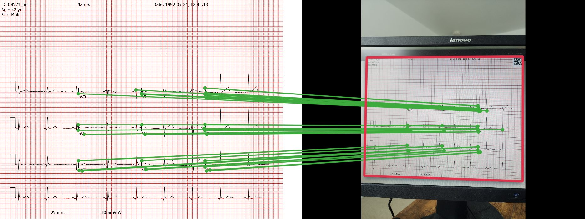
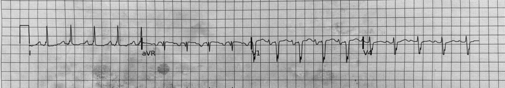
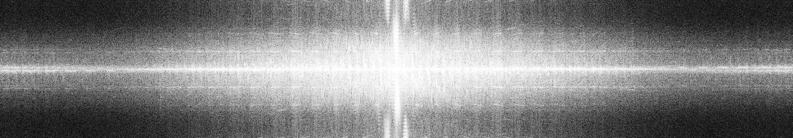
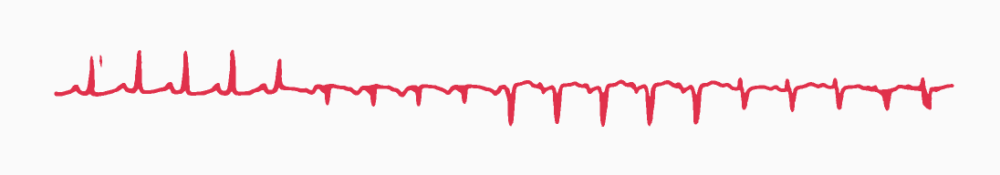

Demo
Upside down detected → rotating 180°
The pipeline requires this fixed ECG layout.
One command per scan or folder. No cloud, no API calls.
# set up once git clone https://github.com/rociomexiadiaz/Pixels2Physiology cd Pixels2Physiology pip install -r requirements.txt # one scan, or a whole folder → one CSV per record # (the first run downloads the two models) python scripts/digitise.py scan.png --fs 500 --figure python scripts/digitise.py scans/ --fs 500 --out out/


ch 1 · grayscale
ch 2 · log |FFT|
out · ink maskmV = (baseline − y) × 0.5 / 39